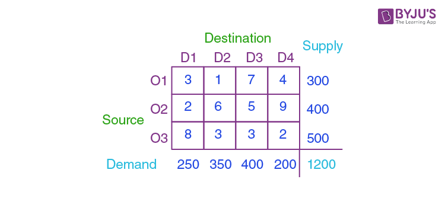
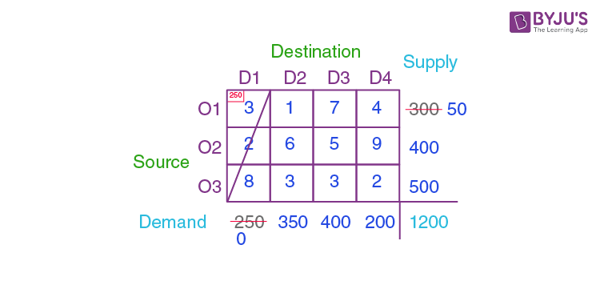
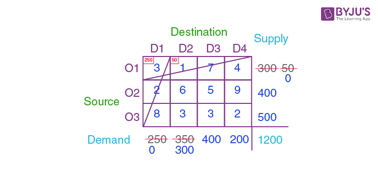
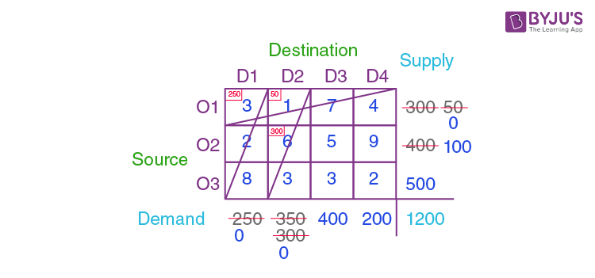
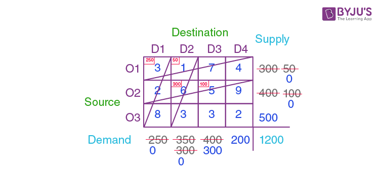
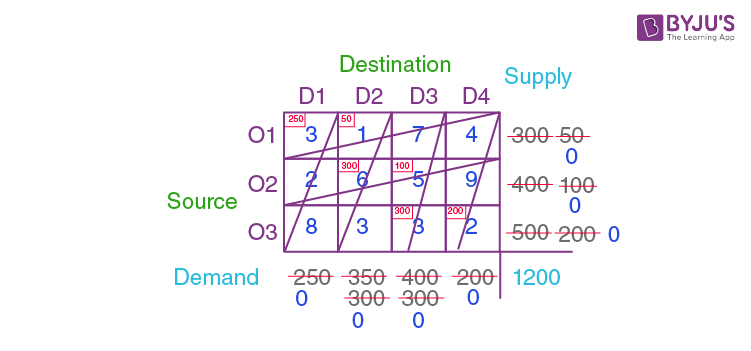

Transportation problem is a special kind of Linear Programming Problem (LPP) in which goods are transported from a set of sources to a set of destinations subject to the supply and demand of the sources and destination respectively such that the total cost of transportation is minimized. It is also sometimes called as Hitchcock problem.
Types of Transportation problems:
-
Balanced:
When both supplies and demands are equal then the problem is said to be a balanced transportation problem.
-
Unbalanced:
When the supply and demand are not equal then it is said to be an unbalanced transportation problem. In this type of problem, either a dummy row or a dummy column is added according to the requirement to make it a balanced problem. Then it can be solved similar to the balanced problem.
Methods to Solve:
To find the initial basic feasible solution there are three methods:
- NorthWest Corner Cell Method.
- Least Cost Method.
- Vogel’s Approximation Method (VAM).
Unit 2 pdf :
Balanced Transportation Problem :
The following is the basic framework of the balanced transportation problem:
The destinations D1, D2, D3, and D4 in the above table are where the products/goods will be transported from various sources O1, O2, O3, and O4. The supply from the source Oi is represented by Si. The demand for the destination Dj is dj. If a product is delivered from source Si to destination Dj, then the cost is called Cij.
Solving Balanced Transportation problem by Northwest Corner Method :
With three sources (O1, O2, and O3) and four destinations (D1, D2, D3, and D4), what is the best way to solve this problem? The supply for the sources O1, O2, and O3 are 300, 400, and 500, respectively. Demands for the destination D1, D2, D3, and D4 are 250, 350, 400, and 200, respectively.
Solution:
The starting point for the North West Corner technique is (O1, D1), which is the table’s northwest corner. The cost of transportation is calculated for each value in the cell. As indicated in the diagram, compare the demand for column D1 with the supply from source O1 and assign a minimum of two to the cell (O1, D1).
Column D1’s demand has been met, hence the entire column will be canceled. The supply from the source O1 is still 300 – 250 = 50.
Analyze the northwest corner, i.e. (O1, D2), of the remaining table, excluding column D1, and assign the lowest among the supply for the appropriate column and rows. Because the supply from O1 is 50 and the demand for D2 is 350, allocate 50 to the cell (O1, D2).
Now, row O1 is canceled because the supply from row O1 has been completed. Hence, the demand for Column D2 has become 350 – 50 = 50.
The northwest corner cell in the remaining table is (O2, D2). The shortest supply from source O2 (400) and the demand for column D2 (300) is 300, thus putting 300 in the cell (O2, D2). Because the demand for column D2 has been met, the column can be deleted, and the remaining supply from source O2 is 400 – 300 = 100.
Again, find the northwest corner of the table, i.e. (O2, D3), and compare the O2 supply (i.e. 100) to the D2 demand (i.e. 400) and assign the smaller (i.e. 100) to the cell (O2, D2). Row O2 has been canceled because the supply from O2 has been completed. Column D3 has a leftover demand of 400 – 100 = 300.
Continuing in the same manner, the final cell values will be:
It should be observed that the demand for the relevant columns and rows is equal in the last remaining cell, which was cell (O3, D4). In this situation, the supply from O3 was 200, and the demand for D4 was 200, therefore this cell was assigned to it. Nothing was left for any row or column at the end.
To achieve the basic solution, multiply the allotted value by the respective cell value (i.e. the cost) and add them all together. I.e., (250 × 3) + (50 × 1) + (300 × 6) + (100 × 5) + (300 × 3) + (200 × 2) = 4400.
Back to main page →